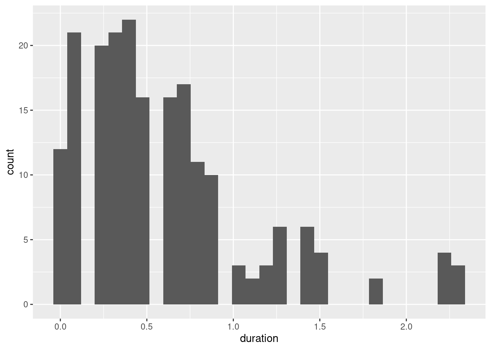

Last updated: 2021-03-24
Checks: 7 0
Knit directory: hospital_pt_accessability/
This reproducible R Markdown analysis was created with workflowr (version 1.6.2). The Checks tab describes the reproducibility checks that were applied when the results were created. The Past versions tab lists the development history.
Great! Since the R Markdown file has been committed to the Git repository, you know the exact version of the code that produced these results.
Great job! The global environment was empty. Objects defined in the global environment can affect the analysis in your R Markdown file in unknown ways. For reproduciblity it’s best to always run the code in an empty environment.
The command set.seed(20200708) was run prior to running the code in the R Markdown file. Setting a seed ensures that any results that rely on randomness, e.g. subsampling or permutations, are reproducible.
Great job! Recording the operating system, R version, and package versions is critical for reproducibility.
Nice! There were no cached chunks for this analysis, so you can be confident that you successfully produced the results during this run.
Great job! Using relative paths to the files within your workflowr project makes it easier to run your code on other machines.
Great! You are using Git for version control. Tracking code development and connecting the code version to the results is critical for reproducibility.
The results in this page were generated with repository version e830487. See the Past versions tab to see a history of the changes made to the R Markdown and HTML files.
Note that you need to be careful to ensure that all relevant files for the analysis have been committed to Git prior to generating the results (you can use wflow_publish or wflow_git_commit). workflowr only checks the R Markdown file, but you know if there are other scripts or data files that it depends on. Below is the status of the Git repository when the results were generated:
Ignored files:
Ignored: .drake/
Ignored: data/
Ignored: keys.R
Untracked files:
Untracked: explore/explore.R
Unstaged changes:
Modified: R/address_to_lonlat.R
Modified: R/calculate_distance_to_testing.R
Modified: R/calculate_driving_time.R
Modified: R/plan.R
Modified: analysis/covid_testing_access.Rmd
Modified: output/mesh_block_summary.csv
Modified: output/summary_sa1.csv
Modified: output/summary_sa2.csv
Modified: output/summary_testing_site.csv
Note that any generated files, e.g. HTML, png, CSS, etc., are not included in this status report because it is ok for generated content to have uncommitted changes.
These are the previous versions of the repository in which changes were made to the R Markdown (analysis/covid_routing_why_are_there_zeros.Rmd) and HTML (docs/covid_routing_why_are_there_zeros.html) files. If you’ve configured a remote Git repository (see ?wflow_git_remote), click on the hyperlinks in the table below to view the files as they were in that past version.
| File | Version | Author | Date | Message |
|---|---|---|---|---|
| Rmd | e830487 | Dennis Wollersheim | 2021-03-24 | workflowr::wflow_publish(“analysis/covid_routing_why_are_there_zeros.Rmd”) |
source('_drake.R')── Attaching packages ─────────────────────────────────────── tidyverse 1.3.0 ──✔ ggplot2 3.3.3 ✔ purrr 0.3.4
✔ tibble 3.1.0 ✔ dplyr 1.0.5
✔ tidyr 1.1.3 ✔ stringr 1.4.0
✔ readr 1.4.0 ✔ forcats 0.5.1Warning: package 'tibble' was built under R version 4.0.4Warning: package 'tidyr' was built under R version 4.0.4Warning: package 'dplyr' was built under R version 4.0.4Warning: package 'lubridate' was built under R version 4.0.4Warning: package 'rmarkdown' was built under R version 4.0.4Linking to GEOS 3.8.0, GDAL 3.0.4, PROJ 6.3.1Data: (c) OpenStreetMap contributors, ODbL 1.0 - http://www.openstreetmap.org/copyrightRouting: OSRM - http://project-osrm.org/Loading required package: rgeosLoading required package: sprgeos version: 0.5-5, (SVN revision 640)
GEOS runtime version: 3.8.0-CAPI-1.13.1
Linking to sp version: 1.4-2
Polygon checking: TRUE Loading required package: maptoolsWarning: package 'maptools' was built under R version 4.0.4Checking rgeos availability: TRUEThis is workflowr version 1.6.2
Run ?workflowr for help getting startedWarning: package 'rvest' was built under R version 4.0.4[conflicted] Will prefer purrr::pluck over any other package[conflicted] Will prefer dplyr::filter over any other package[conflicted] Will prefer dplyr::summarise over any other packageloadd(df_covid_remoteness)
loadd(df_mesh_detail )
loadd(df_crow_distances )
loadd(df_mesh_in_reach )
loadd(df_population_in_reach )
loadd(df_driving_time )
loadd(df_distance_to_testing)
loadd( df_mesh_sa1 )
loadd( df_mesh_sa2 )yes. From 12 distinct meshblocks
df_driving_time %>%
filter( duration==0) %>%
distinct( MB_CODE16, id)# A tibble: 12 x 2
id MB_CODE16
<dbl> <chr>
1 6 20004210000
2 8 20244290000
3 23 20130430000
4 30 20201454000
5 38 20400890000
6 42 20287440000
7 66 20630231000
8 70 20175420000
9 73 20631922310
10 97 20414301000
11 120 20631932770
12 136 20715190000calculate them again - yes
df_driving_time %>%
filter( duration==0) %>%
inner_join( readd(df_covid_test_location)) %>%
calculate_driving_time()Joining, by = "id"Finished calculating time to drive to 6: 0.112 sec elapsed
Finished calculating time to drive to 8: 0.018 sec elapsed
Finished calculating time to drive to 23: 0.012 sec elapsed
Finished calculating time to drive to 30: 0.022 sec elapsed
Finished calculating time to drive to 38: 0.026 sec elapsed
Finished calculating time to drive to 42: 0.022 sec elapsed
Finished calculating time to drive to 66: 0.019 sec elapsed
Finished calculating time to drive to 70: 0.019 sec elapsed
Finished calculating time to drive to 73: 0.022 sec elapsed
Finished calculating time to drive to 97: 0.015 sec elapsed
Finished calculating time to drive to 120: 0.007 sec elapsed
Finished calculating time to drive to 136: 0.012 sec elapsed
finished overall driving time calculation: 0.556 sec elapsed# A tibble: 12 x 5
id MB_CODE16 mc_lon mc_lat duration
<dbl> <chr> <dbl> <dbl> <dbl>
1 6 20004210000 144. -37.6 0
2 8 20244290000 144. -38.2 0
3 23 20130430000 144. -37.0 0
4 30 20201454000 142. -38.3 0
5 38 20400890000 145. -37.8 0
6 42 20287440000 142. -36.7 0
7 66 20630231000 145. -37.9 0
8 70 20175420000 145. -38.1 0
9 73 20631922310 145. -37.8 0
10 97 20414301000 142. -34.2 0
11 120 20631932770 145. -37.7 0
12 136 20715190000 145. -37.8 0How far between these ids and meshblocks Totalling about 600M, or 50M average
Also note, these are pretty much the closest meshblocks to each of these testing locations
df_driving_time %>%
filter( duration==0) %>%
inner_join( df_crow_distances ) %>%
ungroup() %>%
summarise( sum(dist))Joining, by = c("id", "MB_CODE16", "mc_lon", "mc_lat")# A tibble: 1 x 1
`sum(dist)`
<dbl>
1 600.df_driving_time %>%
filter( duration==0) %>%
inner_join( df_crow_distances, by='id' ) %>%
group_by(id) %>%
filter( dist==min(dist)) %>%
ungroup() %>%
summarise( sum(dist))# A tibble: 1 x 1
`sum(dist)`
<dbl>
1 590.50M average is not unusual
df_crow_distances %>%
group_by(id) %>%
filter( dist==min(dist)) %>%
ungroup() %>%
ggplot(aes( dist ) ) +
geom_histogram()`stat_bin()` using `bins = 30`. Pick better value with `binwidth`.df_crow_distances %>%
ggplot(aes( dist ) ) +
geom_histogram()`stat_bin()` using `bins = 30`. Pick better value with `binwidth`.50M average is not unusual
df_driving_time %>%
group_by(id) %>%
filter( duration==min(duration)) %>%
ungroup() %>%
ggplot(aes( duration ) ) +
geom_histogram()`stat_bin()` using `bins = 30`. Pick better value with `binwidth`.
df_driving_time %>%
ggplot(aes( duration ) ) +
geom_histogram()`stat_bin()` using `bins = 30`. Pick better value with `binwidth`.Warning: Removed 5 rows containing non-finite values (stat_bin).closest testing site to mesh block
How many mesh blocks / population are closest to a test site
for each mesh block, find the closest test site (as crow flies ) for each test site, how many mesh blocks / population / average road distance to these closest mesh blocks
testing site x closest population, number of mesh blocks
remoteness of testing site (based on shape file)
df_crow_distances %>%
group_by( MB_CODE16) %>%
filter( dist == min(dist) ) %>%
ungroup() %>%
{ . } -> df_closest_site
df_closest_site %>%
select(-starts_with('mc'), -starts_with('covid')) %>%
inner_join(df_mesh_detail, by = "MB_CODE16") %>%
inner_join(df_distance_to_testing, by = c("MB_CODE16", 'id') ) %>%
group_by(id) %>%
summarise( area = sum(AREA_ALBERS_SQKM ),
dwelling = sum(Dwelling),
population = sum(Person),
mean_dist = mean(dist),
mean_duration = mean(duration),
n_mesh_blocks=n(),
.groups='drop'
) %>%
inner_join( df_covid_remoteness, by='id') %>%
{ . } -> df_site_summary
df_site_summary %>%
DT::datatable()#
#
df_site_summary %>%
write_csv('output/summary_testing_site.csv')
df_closest_site %>%
select(-starts_with('mc'), -starts_with('covid')) %>%
inner_join(df_mesh_detail, by = "MB_CODE16") %>%
inner_join(df_distance_to_testing, by = c("MB_CODE16", 'id') ) %>%
write_csv('output/mesh_block_summary.csv')
#
#marry mesh block into sa2 -
which SA’s have shortest and longest travel times to testing sites
average traveltime Meshblock per sa1
sa1 x avg travel time, sa2 x avg travel time
df_closest_site %>%
select(-starts_with('mc'), -starts_with('covid')) %>%
inner_join(df_mesh_sa1, by = "MB_CODE16") %>%
select(-starts_with('mc'), -starts_with('covid')) %>%
inner_join(df_distance_to_testing, by = c("MB_CODE16", 'id') ) %>%
group_by(SA1_MAIN16) %>%
summarise( dist = mean(dist),
duration = mean(duration),
n_mesh_blocks = n(), .groups='drop') %>%
write_csv('output/summary_sa1.csv')
df_closest_site %>%
select(-starts_with('mc'), -starts_with('covid')) %>%
inner_join(df_mesh_sa2, by = "MB_CODE16") %>%
select(-starts_with('mc'), -starts_with('covid')) %>%
inner_join(df_distance_to_testing, by = c("MB_CODE16", 'id') ) %>%
group_by(SA2_MAIN16) %>%
summarise( dist = mean(dist),
duration = mean(duration),
n_mesh_blocks = n(), .groups='drop') %>%
write_csv('output/summary_sa2.csv')
sessionInfo()R version 4.0.3 (2020-10-10)
Platform: x86_64-pc-linux-gnu (64-bit)
Running under: Ubuntu 20.04.2 LTS
Matrix products: default
BLAS: /usr/lib/x86_64-linux-gnu/blas/libblas.so.3.9.0
LAPACK: /usr/lib/x86_64-linux-gnu/lapack/liblapack.so.3.9.0
locale:
[1] LC_CTYPE=en_US.UTF-8 LC_NUMERIC=C
[3] LC_TIME=en_US.UTF-8 LC_COLLATE=en_US.UTF-8
[5] LC_MONETARY=en_US.UTF-8 LC_MESSAGES=en_US.UTF-8
[7] LC_PAPER=en_US.UTF-8 LC_NAME=C
[9] LC_ADDRESS=C LC_TELEPHONE=C
[11] LC_MEASUREMENT=en_US.UTF-8 LC_IDENTIFICATION=C
attached base packages:
[1] stats graphics grDevices utils datasets methods base
other attached packages:
[1] rvest_1.0.0 leaflet_2.0.4.1 workflowr_1.6.2 cleangeo_0.2-3
[5] maptools_1.1-1 rgeos_0.5-5 sp_1.4-5 geohash_0.4.0
[9] osrm_3.4.0 sf_0.9-7 janitor_2.1.0 rmarkdown_2.7
[13] lubridate_1.7.10 geosphere_1.5-10 forcats_0.5.1 stringr_1.4.0
[17] dplyr_1.0.5 purrr_0.3.4 readr_1.4.0 tidyr_1.1.3
[21] tibble_3.1.0 ggplot2_3.3.3 tidyverse_1.3.0 drake_7.12.7
[25] dotenv_1.0.2 conflicted_1.0.4 nvimcom_0.9-102
loaded via a namespace (and not attached):
[1] colorspace_2.0-0 ellipsis_0.3.1 class_7.3-18 rprojroot_2.0.2
[5] snakecase_0.11.0 fs_1.5.0 rstudioapi_0.13 proxy_0.4-25
[9] farver_2.1.0 DT_0.17 fansi_0.4.2 xml2_1.3.2
[13] cachem_1.0.4 knitr_1.31 jsonlite_1.7.2 broom_0.7.5
[17] dbplyr_2.1.0 compiler_4.0.3 httr_1.4.2 tictoc_1.0
[21] backports_1.2.1 assertthat_0.2.1 fastmap_1.1.0 cli_2.3.1
[25] later_1.1.0.1 htmltools_0.5.1.1 prettyunits_1.1.1 tools_4.0.3
[29] igraph_1.2.6 gtable_0.3.0 glue_1.4.2 Rcpp_1.0.6
[33] cellranger_1.1.0 jquerylib_0.1.3 vctrs_0.3.6 crosstalk_1.1.1
[37] xfun_0.22 ps_1.6.0 lifecycle_1.0.0 scales_1.1.1
[41] hms_1.0.0 promises_1.2.0.1 parallel_4.0.3 yaml_2.2.1
[45] memoise_2.0.0 sass_0.3.1 stringi_1.5.3 highr_0.8
[49] e1071_1.7-5 filelock_1.0.2 storr_1.2.5 rlang_0.4.10
[53] pkgconfig_2.0.3 bitops_1.0-6 evaluate_0.14 lattice_0.20-41
[57] htmlwidgets_1.5.3 labeling_0.4.2 tidyselect_1.1.0 magrittr_2.0.1
[61] R6_2.5.0 generics_0.1.0 base64url_1.4 txtq_0.2.3
[65] DBI_1.1.1 pillar_1.5.1 haven_2.3.1 whisker_0.4
[69] foreign_0.8-79 withr_2.4.1 units_0.7-1 RCurl_1.98-1.3
[73] modelr_0.1.8 crayon_1.4.1 KernSmooth_2.23-18 utf8_1.2.1
[77] progress_1.2.2 grid_4.0.3 readxl_1.3.1 git2r_0.28.0
[81] reprex_1.0.0 digest_0.6.27 classInt_0.4-3 httpuv_1.5.5
[85] munsell_0.5.0 bslib_0.2.4